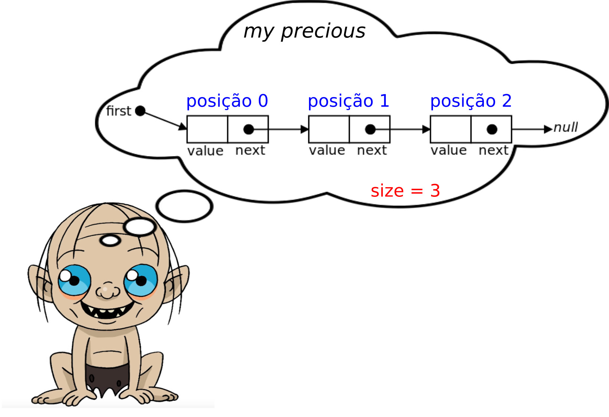

Neste problema deverá apenas submeter uma classe SinglyLinkedList<T> (e não um programa completo).

Use como base a classe SinglyLinkedList<T> (ver código | download de Node.Java e SinglyLinkedList.Java), que representa uma lista ligada simples e tem disponíveis métodos para adicionar ou remover um elemento no início ou no final, devolver o tamanho, saber se a lista está vazia ou retornar representação em string para escrita (tal como dado nas aulas).
One linked list to rule them all,
one linked list to find them,
One linked list to bring them all
and in the darkness bind them.
A população da Terra dos Dados deposita toda a sua fé em ti! Depois de teres conseguido obter o código base da classe SinglyLinkedList<T>, arrancada das mãos dos docentes que a admiravam dizendo "my precious", tens agora de provar que sabes dominar o seu poder, implementando três novos métodos da classe.
Deve acrescentar à classe dada os seguintes métodos (não modificando nenhum dos métodos já existentes no código base):
| Lista inicial | Chamada | O que deve ser devolvido |
|---|---|---|
| list = {2,4,6,8} | list.reverse() | new_list = {8,6,4,2} |
| list = {'a','b','c'} | list.reverse() | new_list = {'c','b','a'} |
| list = {"edados"} | list.reverse() | new_list = {"edados"} |
| list = {} | list.reverse() | new_list = {} |
| Lista inicial | Chamada | O que deve ser devolvido |
|---|---|---|
| list = {2,5,1,1,2,1} | list.occurrences(1) | [2,3,5] |
| list = {2,5,1,1,2,1} | list.occurrences(2) | [0,4] |
| list = {2,5,1,1,2,1} | list.occurrences(3) | null |
| list = {'a','a','a','a'} | list.occurrences('a') | [0,1,2,3] |
| list = {"estruturas","de","dados"} | list.occurrences("dados") | [2] | list = {'a','n','a','n','a','s',} | list.occurrences('a') | [0,2,4] |
| Lista inicial | Chamada | Estado da lista depois da chamada |
|---|---|---|
| list = {'a','b','d','a','c'} | list.remove({'c','a'}) | list = {'b','d'} |
| list = {'a','b','d','a','c'} | list.remove({'a'}) | list = {'b','d','c'} |
| list = {'a','b','d','a','c'} | list.remove({'a','b','c','d','e'}) | list = {} |
| list = {42,22,42,42,22,42} | list.remove({42,1}) | list = {22,22} |
| list = {"ola","ola","mundo","ola"} | list.remove("ola") | list = {"mundo"} |
| list = {1,2,3,3,2,1} | list.remove(3) | list = {1,2,2,1} |
Conteúdo de Fernando Silva (DCC/FCUP), migrado de dcc.fc.up.pt/~fds/aulas/EDados/2526/praticas/problems/prob232.html.